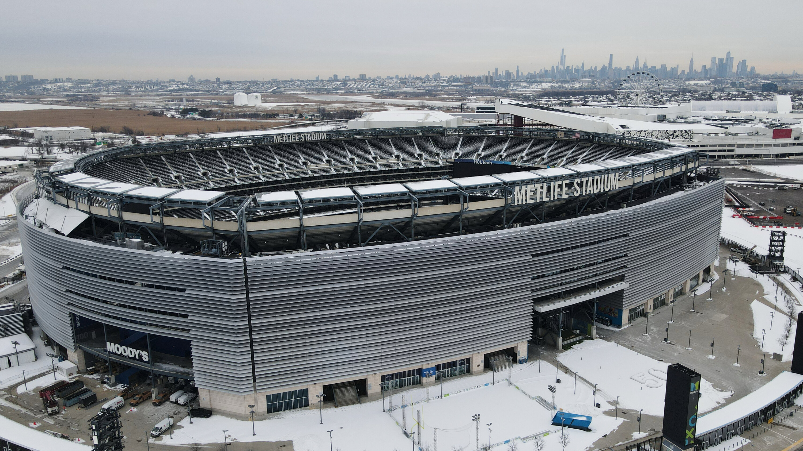
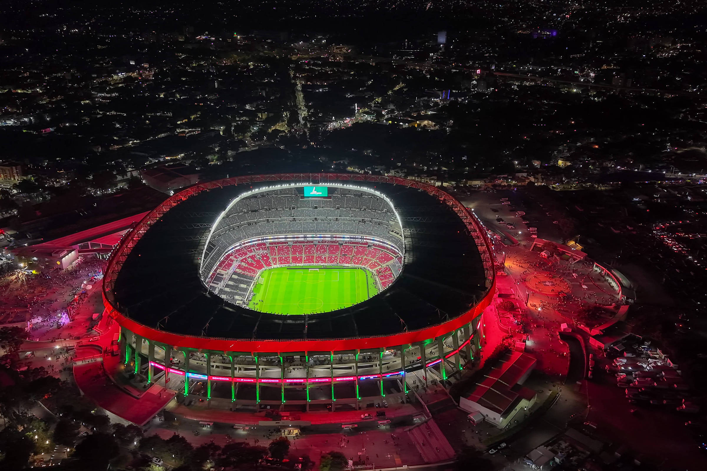

O MetLife Stadium, que será chamado de New York New Jersey Stadium durante a Copa do Mundo de 2026, consolidou-se como o palco de maior prestígio do torneio ao ser escolhido para sediar a grande final no dia 19 de julho. Localizado em East Rutherford, a poucos minutos de Manhattan, o gigante com capacidade para mais de 82.500 torcedores passará por adaptações cruciais, incluindo a substituição de seu gramado sintético por grama natural de alta tecnologia e ajustes nas dimensões das arquibancadas inferiores para atender aos padrões da FIFA. Com um histórico de receber eventos massivos como o Super Bowl e a final da Copa América Centenário, o estádio promete uma atmosfera eletrizante e multicultural, servindo como o ponto de encontro global onde o próximo campeão do mundo erguerá a taça em pleno verão norte-americano.

O Estádio Azteca, na Cidade do México, fará história em 2026 ao se tornar o primeiro estádio a sediar três edições de Copa do Mundo. Conhecido como o "Colosso de Santa Úrsula", o icônico palco que viu o apogeu de Pelé em 1970 e Maradona em 1986 será o local da partida de abertura do torneio, em 11 de junho. Com uma capacidade para cerca de 83.000 torcedores e situado a mais de 2.200 metros acima do nível do mar, o Azteca passa por uma modernização profunda para unir sua mística histórica às exigências atuais da FIFA, reafirmando-se como o maior templo do futebol nas Américas.

O AT&T Stadium, localizado em Arlington, no Texas, será um dos pilares da Copa de 2026, recebendo o maior número de partidas do torneio (nove no total), incluindo uma das semifinais. Conhecido mundialmente como a casa do Dallas Cowboys, o estádio é uma maravilha da engenharia moderna com seu teto retrátil e um dos maiores telões suspensos do mundo. Para o mundial, o "Palácio de Cristal" — que tem capacidade expansível para cerca de 94.000 espectadores — passará por adaptações significativas para elevar o nível do campo e instalar grama natural, garantindo que sua infraestrutura futurista ofereça o espetáculo máximo em solo texano.